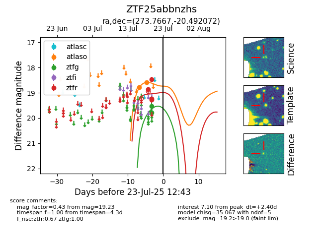

Target ZTF25abbnzhs at 2025-07-23 12:43, see:
FINK: fink-portal.org/ZTF25abbnzhs
Lasair: lasair-ztf.lsst.ac.uk/objects/ZTF25abbnzhs
ALeRCE: alerce.online/object/ZTF25abbnzhs
alt names
ZTF25abbnzhs (ztf,fink)
coordinates:
equatorial (ra, dec) = (273.7667,-20.49207)
galactic (l, b) = (10.6470,-1.59771)
photometry
last atlaso=18.59, ztfg=19.52, ztfr=19.23
2 atlaso, 2 ztfg, 4 ztfr detections
